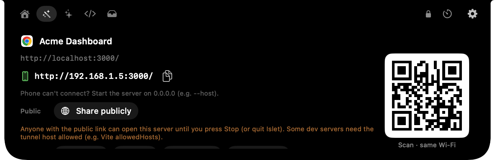
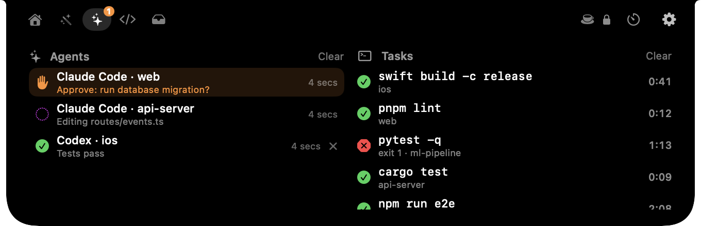
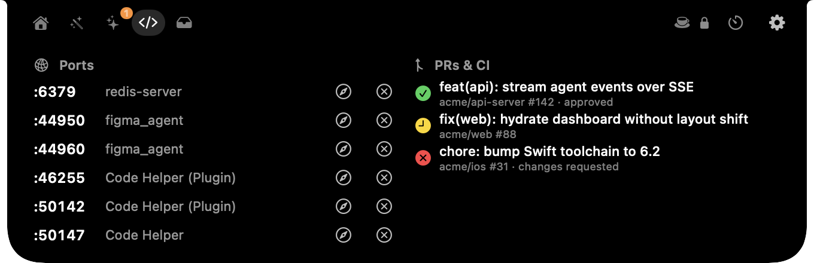
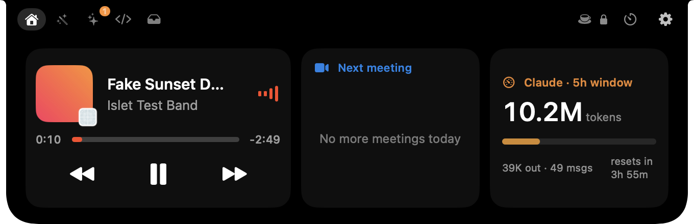

Run your Mac from the notch.
Agents stop to ask for approval. Builds finish in another window. PRs sit on CI. Islet puts all of it in the notch, and turns into the right tools for whatever app you're in.
Free · source-available · Apple silicon · macOS 14+
- Running
- Needs you
- Approved
- Testing
- Done
Background work keeps pulling you out of focus.
Every row is something Islet does today. No made-up time savings, just the steps it removes.
islet run npm test shows elapsed time, then ✓ or ✗ with a chime.One notch. The right tools for every app.
The App tab appears only when the app in front has something useful to offer. Otherwise it stays out of the way.
Your repo, one glance away.
- Branch, ahead/behind and changed files
- AI-written commit message, edited and committed by you
- Stash dashboard and undo last commit (warns if pushed)
- "main ↓N · update" with rebase or merge
- A git guide filled in with your repo's names
- Run tests and see this project's dev servers
localhost, everywhere.
- localhost → phone link + QR on the same Wi-Fi
- Share publicly with a live tunnel link and a LIVE pill
- Window size presets: iPhone, iPad, laptop, desktop
- Clean links and Markdown links
- GitHub helpers: clone,
gh pr checkout, issue as task

Every long task, in view.
- Live
islet runtasks with Stop - The last 15 finished tasks: copy, or re-run in the same folder
- Your last 15 commands, with secret-looking lines hidden
Paths without the fiddling.
- Copy the absolute path, or the path relative to the git root
- Open Terminal in this folder
- Selected images → one PDF
Small tools where they belong.
- Figma: screen eyedropper with colour history
- Preview: drag PDFs onto the notch to merge them
- Claude desktop: usage and all your agents
- Any app: your own buttons that run shell commands
Every state is visible. You stay in control.
Islet reports and brings you to the right window. It never approves, commits or deploys on its own.
Something starts
A Claude Code or Codex session, or any command via islet run.
It's in the pill
Elapsed time and project at a glance. The Mac stays awake.
It asks, you decide
✋ and a chime. Click the pill or press J to jump to the terminal that's waiting.
It tells you how it went
✓ or ✗ with the exit code passed through, plus a chime.
Files land on the Shelf
Downloads and file outputs collect on the File Shelf, ready to drag or AirDrop.
Works withClaude Code and Codex built in, and anything else via islet agent waiting --project api
Built around what you wait on.
Every module can be switched off. Nothing runs while it's hidden.
Agents that need you
Running, needs you, done or error, per project. Needs-you bounces once with a chime; J jumps to the window.
islet run anything
Builds, tests, deploys. Output stays in your terminal and the exit code passes through, so it works in scripts.
PRs & CI
Your open GitHub PRs with CI status and review state. Setup and sign-in happen inside the app.
Ports
Every listening server with its process. Open it in the browser or stop it in two clicks.
Claude usage
Tokens in the current 5-hour window and when it resets, with an optional budget bar.
Keep awake
Holds the display awake while agents or tasks run, and releases it when they're done.
All Mute
Green and orange dots when the camera or mic is in use. M mutes the mic in every app.
Share publicly
A Cloudflare or localhost.run tunnel for any local port, with QR and a LIVE pill.
Keyboard first
Double-tap ⌃ to open it with focus. ⌘1–⌘6 for tabs, ? for every shortcut.
The real app, and the real numbers.
Screenshots straight from Islet, using demo data so no one's private repos are on show.



| Memory, normal use | 23–29 MB |
|---|---|
| Memory, peak under stress test | ≤ 35 MB |
| CPU when idle | 0 % |
| Background disk writes | none |
| Download | ~2.5 MB |
Heavy work (log scanning, image and PDF jobs, QR codes, AppleScript) runs in short-lived helper processes that exit when done. Nothing polls while the notch is closed, and there are no continuous animations.
Measured with tools/loadtest.sh on an Apple-silicon MacBook
Free. Every feature. No account.
No trial, no tiers, no usage limits. Here's exactly what you get and what you need.
- Every feature on this page
- No login, analytics or server
- Read, change and fork the code
- Updates from GitHub Releases
| Item | Details | More |
|---|---|---|
| Mac | Apple silicon (M1 or later), macOS 14 Sonoma or later. Works on screens without a notch too. | No notch? |
| Agents | Claude Code and Codex built in. Any other tool via islet agent. | Which agents? |
| Usage meter | Claude Code's 5-hour window, read from local logs. | Why only Claude? |
| PRs & CI | Uses the GitHub CLI; setup installs it and signs you in. | How? |
| First launch | One-time "Open Anyway" in System Settings (not notarized yet). | Why? |
| License | Use, modify and fork freely with credit. Selling it isn't allowed. | Details |
Questions, answered plainly.
Why does macOS ask me to "Open Anyway"?
Islet is signed but not yet notarized by Apple, which needs a paid developer account. The first time you open it, go to System Settings → Privacy & Security and click Open Anyway. You only do this once. The full source is on GitHub if you'd rather build it yourself.
Which AI agents does it support?
Claude Code connects in one click during setup, and Codex via its notify setting. Anything else (Cursor, Gemini CLI, your own scripts) can report with one line, e.g. islet agent waiting --name "My Agent" --project api. Native hooks for more agents are on the roadmap.
Why does the usage meter only show Claude?
It reads Claude Code's local session logs, so nothing leaves your Mac. Other providers don't keep comparable local logs yet; more meters are on the roadmap.
How do PRs and CI get into the notch?
Islet uses GitHub's own gh CLI. Setup installs it (with Homebrew, or GitHub's installer) and opens a browser sign-in. Your token stays in your Keychain, and Islet never sees it.
What does Islet collect?
Nothing. There's no account, analytics or server. The keyboard shortcut reads only the Control key. A public tunnel runs only when you click Share publicly, and shows a LIVE pill the whole time.
Does it work on Macs or monitors without a notch?
Yes. Screens without a notch get a slim black pill at the top centre that behaves the same way, on every display.
Is it open source?
It's source-available under MIT + Commons Clause. You can use it at home or at work, read and change the code, and fork it with credit. What isn't allowed is selling Islet or a product built mainly from its code.
How do I uninstall it?
Remove the Claude Code hooks in Control panel → Agents, quit Islet, and move it to the Trash. Optionally delete ~/Library/Application Support/Islet.
Give your notch a job.
Free, source-available and private. About 2.5 MB, set up in a minute.
Apple silicon · macOS 14+